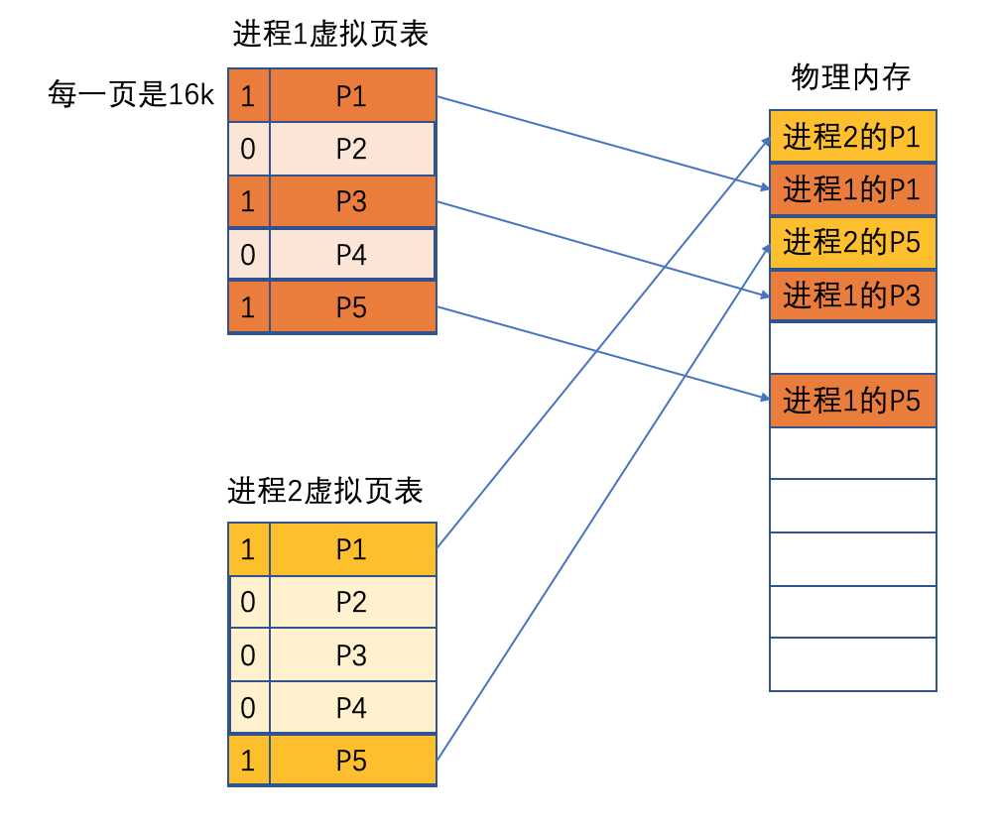
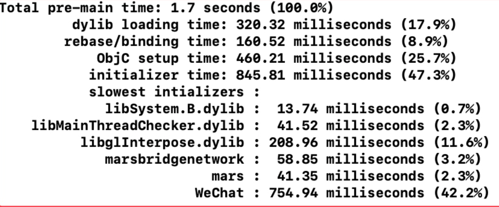
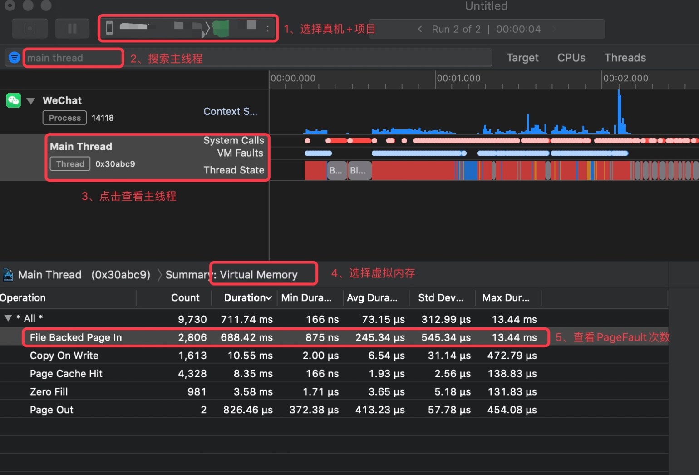

基本概念
虚拟内存 & 物理内存
我们在进程和物理内存之间增加一个中间层，这个中间层就是所谓的虚拟内存，主要用于解决当多个进程同时存在时，对物理内存的管理。提高了CPU的利用率，使多个进程可以同时、按需加载。
所以虚拟内存其本质就是一张虚拟地址和物理地址对应关系的映射表。
- 每个进程都有一个独立的虚拟内存，从0开始，大小是4G固定的，每个虚拟内存又会划分为一个一个的页（page的大小在iOS中是16K，其他的是4K），每次加载都是以页为单位加载的，进程间是无法互相访问的，保证了进程间数据的安全性。
- 一个进程中，只有部分功能是活跃的，所以只需要将进程中活跃的页放入物理内存，避免物理内存的浪费。
- 当CPU需要访问数据时，首先是访问虚拟内存，然后通过虚拟内存去寻找真正的物理内存，然后对相应的物理地址进行访问
- 如果在访问时，虚拟地址的内容未加载到物理内存，会发生缺页异常（pagefault），此时需要先将数据载入到物理内存（这个过程是很快的），然后再读取。这样就避免了内存浪费

ASLR
虚拟内存的起始地址与大小都是固定的，这意味着，当我们访问时，其数据的地址也是固定的，这会导致我们的数据非常容易被破解，为了解决这个问题，所以苹果为了解决这个问题，在iOS4.3开始引入了ASLR技术。
ASLR的概念：(Address Space Layout Randomization ) 地址空间配置随机加载，是一种针对缓冲区溢出的安全保护技术，通过对堆、栈、共享库映射等线性区布局的随机化，通过增加攻击者预测目的地址的难度，防止攻击者直接定位攻击代码位置，达到阻止溢出攻击的目的的一种技术。
其目的的通过利用随机方式配置数据地址空间，使某些敏感数据（例如APP登录注册、支付相关代码）配置到一个恶意程序无法事先获知的地址，令攻击者难以进行攻击。
由于ASLR的存在，导致可执行文件和动态链接库在虚拟内存中的加载地址每次启动都不固定，所以需要在编译时来修复镜像中的资源指针，来指向正确的地址。即正确的内存地址 = ASLR地址 + 偏移值
可执行文件
通用二进制文件是苹果公司提出的一种新的二进制文件的存储结构，可以同时存储多种架构的二进制指令，使CPU在读取该二进制文件时可以自动检测并选用合适的架构，以最理想的方式进行读取。
由于通用二进制文件会同时存储多种架构，所以比单一架构的二进制文件大很多，会占用大量的磁盘空间，但由于系统会自动选择最合适的，不相关的架构代码不会占用内存空间，且执行效率高了。
Mach-O文件是Mach Object文件格式的缩写，它是用于可执行文件、动态库、目标代码的文件格式。作为a.out格式的替代，Mach-O格式提供了更强的扩展性，以及更快的符号表信息访问速度。经常使用MachOView工具来查看Mach-O文件。
Mach-O的组成
- Header：主要是Mach-O的cpu架构，文件类型以及加载命令等信息
- Load Commands：描述了文件中数据的具体组织结构，不同的数据类型使用不同的加载命令表示。（通常为framework、dylib的加载）
- Data：数据区域
- __TEXT：只读，包括函数、静态变量等
- __DATA：读写，可变的全局变量等
- __LINKEDIT：方法、变量
启动
启动的过程一般是指从用户点击app图标开始到[AppDelegate didFinishLaunching方法执行完成为止，其中，启动也分为冷启动和热启动
- 冷启动：内存中不包含app相关数据的启动，一般我们可以通过重启手机来实现冷启动
- 热启动：是指杀掉app进程后，数据仍然存在时的启动
而我们这里所说的启动优化，一般是指冷启动情况下的，这种情况下的启动主要分为两部分：
- T1 ：pre-main阶段，即main函数之前，操作系统加载App可执行文件到内存，执行一系列的加载、链接等工作，简单来说，就是dyld加载过程。
- T2：main函数之后，即从main函数开始，到Appdelegate 的didFinishLaunching方法执行完成为止，主要是构建第一个界面，并完成渲染。
所以，T1+T2的过程 就是 从用户点击App图标到用户能看到app主界面的过程，即需要启动优化的部分。
pre-main阶段
pre-main阶段的启动时间其实就是dyld加载过程的时间。
针对main函数之前的启动时间，苹果提供了内建的测量方法，在Edit Scheme -> Run -> Arguments -> Environment Variables点击【+】添加环境变量 DYLD_PRINT_STATISTICS 设为 1，然后运行，就可以直接打印相关数据。

pre-main阶段一共耗时1.7s。
dylib loading time：主要是加载动态库，用时320.32msrebase/binding time：偏移修正、符号绑定耗时，耗时160.52msrebase：偏移修正，任何一个app生成的二进制文件，在二进制文件内部所有的方法、函数调用，都有一个地址，这个地址是在当前二进制文件中的偏移地址。在APP运行是，每次系统都会随机分配一个ASLR（Address Space Layout Randomization，地址空间布局随机化）地址值，然后在加上偏移值就是运行时确定的内存地址。binding：绑定，例如NSLog方法，在编译时期生成的mach-o文件中，会创建一个符号！NSLog（目前指向一个随机的地址），然后在运行时（从磁盘加载到内存中，是一个镜像文件），会将真正的地址给符号（即在内存中将地址与符号进行绑定，是dyld做的，也称为动态库符号绑定），一句话概括：绑定就是给符号赋值的过程
ObjC setup time：OC类注册的耗时，OC类越多，越耗时initializer time：执行load和构造函数的耗时
pre-main优化建议
- 尽量减少外部动态库的使用。苹果建议自定义动态库的数量最好不要超过6个，超过6个则合并动态库。
- 减少OC类
- 讲不要的
+load方法去掉，延迟到+initialize中 - 尽量减少C++函数
main 阶段
在main函数之后的didFinishLaunching方法中，主要是执行了各种业务，有很多并不是必须在这里立即执行的，这种业务我们可以采取延迟加载，防止影响启动时间。
在didFinishLaunching中，主要做一下几件事情：
- 初始化第三方sdk
- app运行环境配置
- 自定义工具的初始化等
main 阶段的优化
- 减少启动时需要初始化的sdk等，使用懒加载或者多线程处理。
- 优化代码，去除非必须的代码逻辑。
- 首页UI加载最后使用纯代码，避免使用xib和storybord（需要转换，更耗时）。
- 删除废弃的类、方法。
大招 二进制重排
抖音研发实践：基于二进制文件重排的解决方案 APP启动速度提升超15%
System Trace
基于Page Fault，App在冷启动过程中，会有大量的类、分类、三方等需要加载和执行，此时的产生的Page Fault所带来的的耗时是很大的。我们使用System Trace看下，在启动阶段的Page Fault的堆栈。
打开Instruments工具，选则System Trace。启动之后，在第一个界面出来之后，直接停掉。

可以看到PageFault有2800次。
所以二进制重排要怎么重排呢？
二进制重排原理
在虚拟内存部分，我们知道，当进程访问一个虚拟内存page，而对应的物理内存不存在时，会触发缺页中断（Page Fault），因此阻塞进程。此时就需要先加载数据到物理内存，然后再继续访问。这个对性能是有一定影响的。
所以我们就需要把先优先调用的方法等按照一定的顺序进行排列，这样就避免了Page Falut多次执行的情况。

可以查看上面抖音的文章，通过hook，大部分的方法都可以拿到，但是block、c++、initialize等方法是没有办法hook到，最后他们提到了clang插庄。
我们写一个Demo，来看一下编译的时期的顺序以及如何进行clang插庄。
在target -> Build Setting -> Write Link Map File设置为YES，可以查看linkMap文件代码的执行顺序。
步奏
添加编译参数
在Target -> Build Setting -> Custom Complier Flags -> Other C Flags 添加-fsanitize-coverage=func,trace-pc-guard 这个参数。此时编译会报错。
如果存在swift混编，还需要在 Other Swift Flags 中加入-sanitize-coverage=func 和 -sanitize=undefined。
导入头文件，添加代码
1 | #include <stdint.h> |
当第一个页面加载完成，或者didFinishLaunching之后，调用输出，生成order_file。
1 | - (void)createOrderFile { |
链接order file
在target -> build setting -> order file 导入我们生成的.order文件。
引用：
抖音研发实践：基于二进制文件重排的解决方案 APP启动速度提升超15%